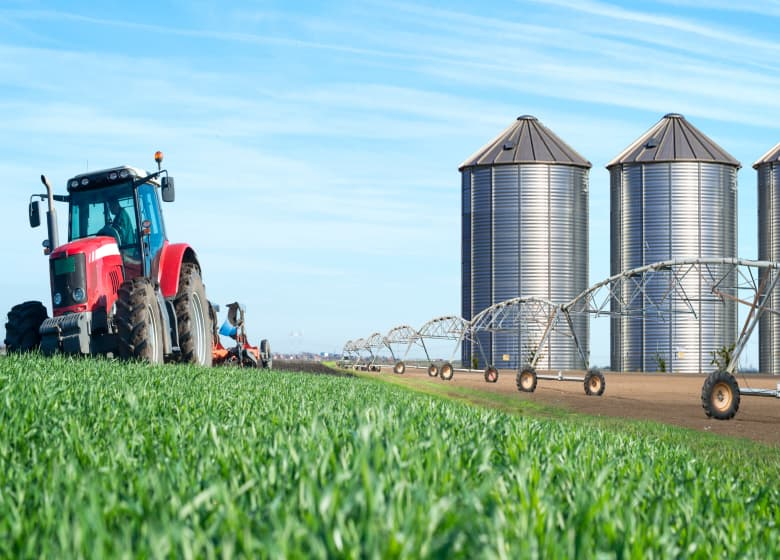

Consultoria e projetos ambientais
Oferecemos suporte e orientação a proprietários de terras que buscam proteger seus recursos naturais, otimizar a produtividade de suas terras e cumprir integralmente a regulamentação brasileira sobre manejo florestal.
ENTRE EM CONTATO
